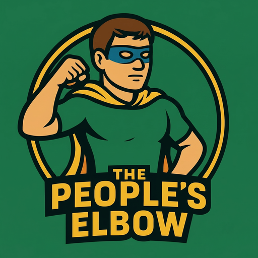

Brand Kit
The logo, the colors, the type. Grab what you need to put The People's Elbow on a flyer, a story, or a venue wall.
These are the working files we hand to host venues, event partners, and anyone writing about the practice. The whole site was built from scratch on mutual aid principles, and the marks are no different. Help yourself.
Download the Marks

{kind=link}
{kind=link}
{kind=link}
The Colors
Green is the brand. If someone remembers one thing, it is the green. Gold is the championship accent, and a little blue keeps it from going flat.
Keep It Recognizable
The green does the work
Loud, deep, unmistakable green is the whole brand. Do not tone it down into something tasteful. The loudness is the point.
The wordmark is Bangers
"THE PEOPLE'S ELBOW" is set in Bangers, the comic-book shout. Do not reset the name in another typeface. It rides with the logo.
Give it room
Leave clear space around the logo. Crowd it against other stuff and it stops reading as one mark.
Need a format that isn't here?
Want a higher-res file or a one-color version? Holler and we will sort it out.
Get in Touch Steal This Site